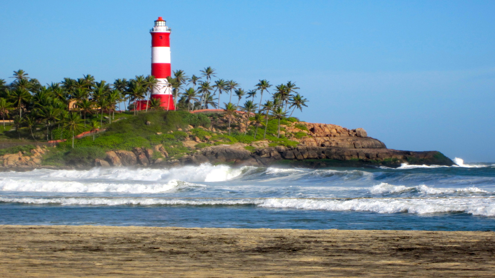
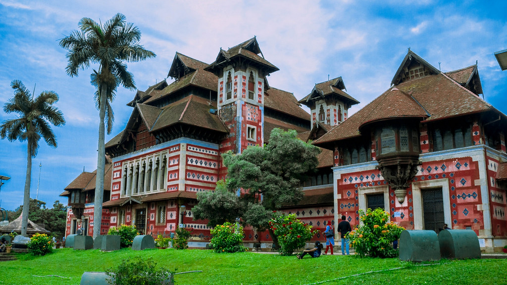

EXPLORE THIRUVANANTHAPURAM
The southern tip of God’s Own Country is home to the administrative and cultural hub of the State, Thiruvananthapuram. From a landscape naturally endowed with some of the most picturesque visuals possible along with culturally relevant holy sites that have thrived for more than a thousand years, this area has something for everyone. Young and old alike, all can experience their own slice of Kerala here, tailor-made to their individual preference. Listed below are some of the most prominent places of interest in the State capital.
The Napier Museum is an art and natural history museum situated in Thiruvananthapuram, India. The Museum is grounds to the Trivandrum Zoo, one of the oldest zoological gardens in India. The zoo was established in 1857 over 55 acres of land. It also contains the Sree Chitra Art Gallery, a separate art gallery established in 1935. The set of museums, along with the zoo, are managed by the Department of Museums and Zoos, a branch of the Department of Cultural Affairs of Kerala.
The Padmanabhaswamy temple is a Hindu temple located in Thiruvananthapuram, the state capital of Kerala, India. The name of the city of Thiruvananthapuram in Malayalam translates to "The City of Lord Ananta", (The City Of Lord Vishnu) referring to the deity of the Padmanabhaswamy temple. The temple is built in an intricate fusion of the Chera style and the Dravidian style of architecture, featuring high walls, and a 16th-century gopura. While the Ananthapura temple at Kumbla in Kasaragod is considered the original seat of the deity ("Moolasthanam"), architecturally to some extent, the temple is a replica of the Adikesava Perumal temple in Thiruvattar.
Kovalam is an internationally renowned beach with three adjacent crescent beaches. It has been a favourite haunt of tourists since the 1930s. A massive rocky promontory on the beach has created a beautiful bay of calm waters ideal for sea bathing.